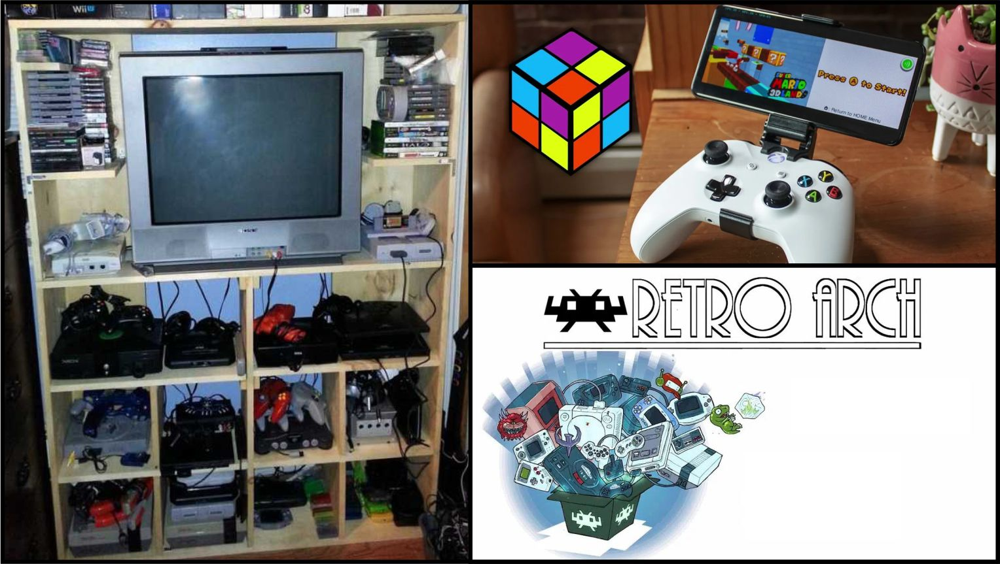

Emulacion y hardware original
En informática, un emulador es un software que permite ejecutar programas o videojuegos en una plataforma (sea una arquitectura de hardware o un sistema operativo) diferente de aquella para la cual fueron escritos originalmente. A diferencia de un simulador, que solo trata de reproducir el comportamiento del programa, un emulador trata de modelar de forma precisa el dispositivo de manera que este funcione como si estuviese siendo usado en el aparato original. Por otra parte el correr los juegos en su hardware original tiene un sabor a nostalgia y tangibilidad que la emulacion no puede otorgar. De todos modos se esta volviendo cada vez mas dificil y/o costoso poder correr juegos en hardware original ya que para disfrutarlos tal como fueron creados se deberia contar con un televisor de tubo o bien invertir no poco dinero en "escaladores de imagen" para correrlos de forma decente en televisores modernos; lo que nos deja con que realmente son pocas las desventajas al momento de emular consolas clasicas principalmente, ya que a travez de la emulacion es posible mejorar los graficos, es posible correr los juegos es multitud de sistemas tales como celulares, incluso poder correr traducciones y modificaciones a juegos realizadas por fans. El avance tecnologico a su vez esta permitiendo que cada vez mas rapido sistemas mas modernos puedan ser emulados incluso llegando a mejorar la experiencia de correrlo en hardware original.